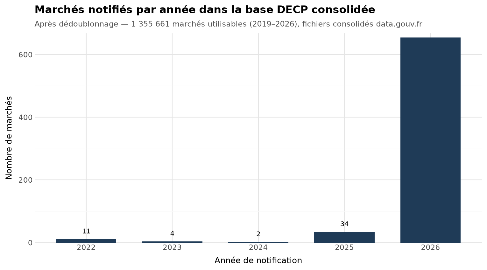
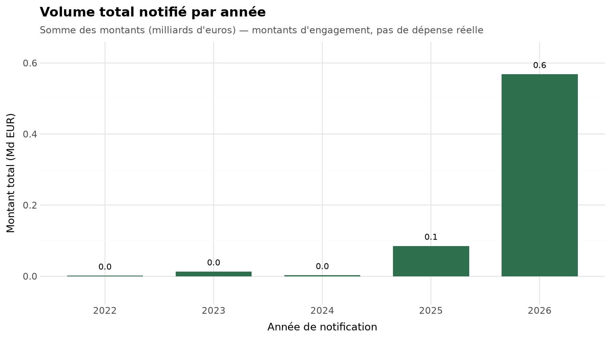
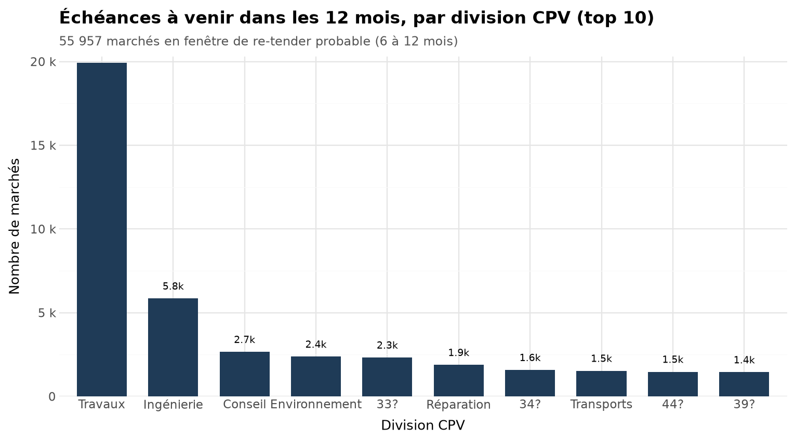

DECP Radar — analytics on French public procurement
Python (stdlib + pandas), Streamlit, Parquet, cron. Data from data.gouv.fr (Licence Ouverte 2.0). Runs weekly on a home server.
The problem
Every public contract awarded in France must be published as a DECP notice. The data is open but split across two sources: daily delta files for fresh notices, yearly consolidated files for history. Duplicated records, inconsistent identifiers, and amounts that mean different things per contract type. Any question worth asking — who won what this week, which contracts expire soon — needs a pipeline before it needs analysis.
What I built
Two repos that work as one product.
decp-digest does ingestion and the weekly digest. Stdlib-only Python: fetches the daily deltas, watermarks on the last processed file, dedupes on (acheteur.id, id) — about 3% of records repeat across consecutive files. Measured over a full validation week: ~750 notices, every field the digest needs at 99.7% fill or better. The README also states what the data cannot support, e.g. publication lags notification by a median of 6 days, so the digest groups by publication date.
decp-analytics rebuilds from the consolidated files (2019–2026), drops superseded records (311,002 dropped, 1,355,661 usable), estimates expiry as dateNotification + dureeMois, and outputs:
- the re-tender window: 55,957 contracts expiring within 12 months, filterable by CPV family, département and buyer;
- a Streamlit dashboard (CPV / département / period filters, KPIs, buyer and supplier views);
- a free 60-row public sample.
A Monday 07:30 cron refreshes both layers. The full rebuild is the only heavy step and fits in the under-2h/week budget.
From the real data



Chart 3 — top CPV divisions: 45 construction (19,916), 71 engineering (5,848), 79 consulting (2,658). Division names come from the dataset as published, unmapped ones ("33?") shown as-is.
All charts come from plotnine on the pipeline's own parquet outputs, and are checked programmatically (text bounding boxes) before publication.
Case study — demo on public data
Case study — demonstration on public data (data.gouv.fr). No client is cited; the figures come from the DECP Radar pipeline and are reproducible.
Problem. The DECP data is published as open data but usable by almost no one: 1.36 M consolidated contracts (2019–2026), ~750 new notices a week, heterogeneous fields. A supplier who wants to spot its upcoming re-tender windows has neither the time nor the tools to sort that volume.
Approach. A Python pipeline (pandas, Parquet): stdlib-only ingestion with watermarking and deduplication, a daily rebuild of the consolidated dataset, field-completeness checks (≥ 99.7% filled). On top of it, a Streamlit dashboard with filters by CPV family, department and buyer. A weekly cron runs in under 2 h of compute.
Result. One concrete, actionable number: 55,957 contracts expiring in the next 12 months, isolable by family, territory and buyer. The signal is exploitable in minutes of filtering instead of days of manual sorting.
What a client does with it. A sales team or a bid office uses this entry point to identify contracts reaching term in its territory, prepare upstream monitoring before notices are published, and prioritise its outreach. Possible deliverables: the dashboard, a periodic extraction filtered on its niche, or a periodic PDF report generated from the same base (Typst).
Next step. Half an hour is enough to scope your niche (CPV, departments) and see the dashboard on your own criteria — contact: kenziferaoun@proton.me.